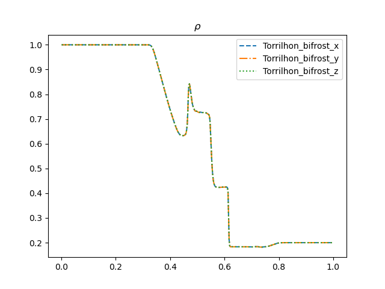
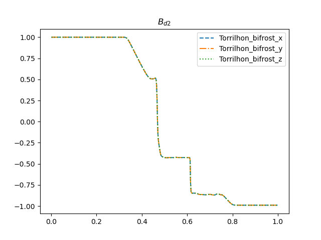
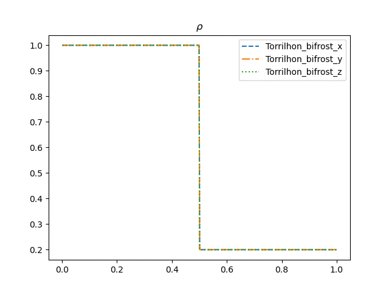
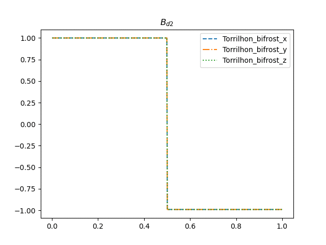

Torrilhon test
Hash: 5278846
For the Torrilhon (2003) test we use the parameter values from table 2 in James M.Stone et al (2008) as follows
| $$\rho_R$$ | $$P_R$$ | $$B_{y,R}$$ | $$B_{z,R}$$ | $$\rho_R$$ | $$P_R$$ | $$B_{y,R}$$ | $$B_{z,R}$$ | $$v_i$$ | $$\gamma$$ |
|---|---|---|---|---|---|---|---|---|---|
| 1.0 | 1.0 | 1.0 | 0 | 0.2 | 0.2 | cos(3) | sin(3) | 0 | 1.4 |
Using the stagger2/bifrost solver with end_time=0.1 and timestep=0.01 yields the following plots
 
Comparing the density plot and the magnetic field plot to Fig. 6 in Torrilhon (2003), we see that the plots are quite similar, with exception of the x-axis being shifted.
Changing parameters
All the bifrost parameters in the inputs are then increased, one by one, by a factor of 10.
The variations in nu1(Ca) and nu2(U) yielded similar, but subtle changes as illustrated below.

Changing nu3(Uv) did not produce any noticable changes.
The variation of nu4 is illustrated bellow

Varying nu5produced no noticable change in $B$ and subtle changes in $\rho$ similar to nu1 and nu2.
Finally the parameter that produced the most change was eta(E):